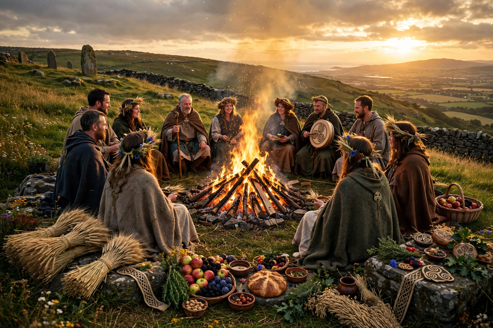

| Also called | Lúnasa, Lùnastal, Lammas (in part) |
|---|---|
| Observed by | Historically Gaels; modern pagans, Wiccans |
| Date | 1 August (or nearest Sunday / full moon) |
| Related to | Samhain, Imbolc, Beltane |
Lughnasadh (Irish: Lúnasa; Scottish Gaelic: Lùnastal) is a Gaelic festival marking the beginning of the harvest season, traditionally held on 1 August, about halfway between the summer solstice and autumn equinox. It is one of the four Gaelic seasonal festivals, with Samhain, Imbolc and Beltane.
The festival is named for the god Lugh, who in mythology instituted funeral games for his foster-mother Tailtiu, who died clearing land for agriculture. Historically, celebrations included hilltop gatherings, ritual cutting of the first grain, offerings of first fruits, feasting, matchmaking, and athletic contests such as the Tailteann Games.
In Ireland, Reek Sunday — climbing Croagh Patrick — survived as a Christianised pilgrimage near this date. Bilberry picking (Fraughan Sunday) was also customary. In modern times, Lughnasadh / Lammas is observed by neopagans as a sabbat celebrating the grain harvest.